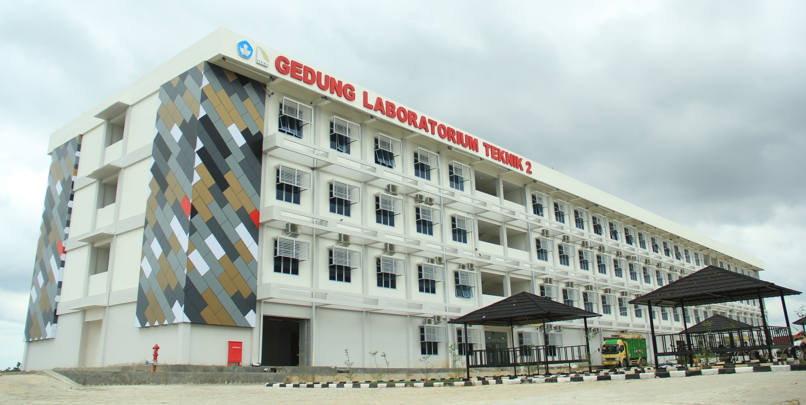

Tentang ITERA
Selamat Datang!
Labtek 2 - Salah satu gedung laboratorium di ITERA
Institut Teknologi Sumatera (ITERA) adalah perguruan tinggi negeri yang berlokasi di Lampung, Indonesia. Didirikan pada tahun 2014, ITERA bertujuan untuk menjadi pusat pendidikan tinggi yang unggul dalam bidang teknologi dan sains, serta berkontribusi pada pembangunan daerah dan nasional.
ITERA menawarkan berbagai program studi di bidang teknik, sains, dan teknologi, termasuk teknik sipil, teknik elektro, teknik mesin, teknik informatika, dan banyak lagi.
Kegiatan Mahasiswa
Kegiatan mahasiswa di Itera sangat beragam, meliputi kegiatan akademik dan non-akademik seperti program pertukaran pelajar, pameran inovasi di Kemahasiswaan Expo, aksi penghijauan kampus oleh mahasiswa baru, serta berbagai acara olahraga, seni, dan budaya yang diselenggarakan oleh Unit Kegiatan Mahasiswa (UKM) seperti UROTERA dan Madani.
Kegiatan akademik dan inovasi:
- Liga Ilmiah ITERA
- Kemahasiswaan Expo
- Program Pertukaran Mahasiswa
Visi dan Misi
Dengan visi untuk menjadi institusi pendidikan tinggi terkemuka di Indonesia, ITERA terus berupaya meningkatkan kualitas pendidikan, penelitian, dan pengabdian kepada masyarakat. Melalui kolaborasi dengan industri dan institusi lain, ITERA berkomitmen menghasilkan lulusan yang kompeten dan siap menghadapi tantangan global.